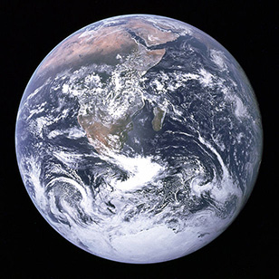

Earth
Earth is the third planet from the Sun, it is the densest and fifth-largest of the eight planets in the Solar System. Earth formed approximately 4.54 billion years ago, and life appeared on its surface within its first billion years. Earth's biosphere then significantly altered the atmospheric and other basic physical conditions, which enabled the proliferation of organisms as well as the formation of the ozone layer, which together with Earth's magnetic field blocked harmful solar radiation, and permitted formerly ocean-confined life to move safely to land. The physical properties of the Earth, as well as its geological history and orbit, have allowed life to persist. Estimates on how much longer the planet will be able to continue to support life range from 500 million years, to as long as 2.3 billion years. The planet is home to millions of species of life, including humans. Both the mineral resources of the planet and the products of the biosphere contribute resources that are used to support a global human population. Earth has one moon, which is the fifth largest in the solar system